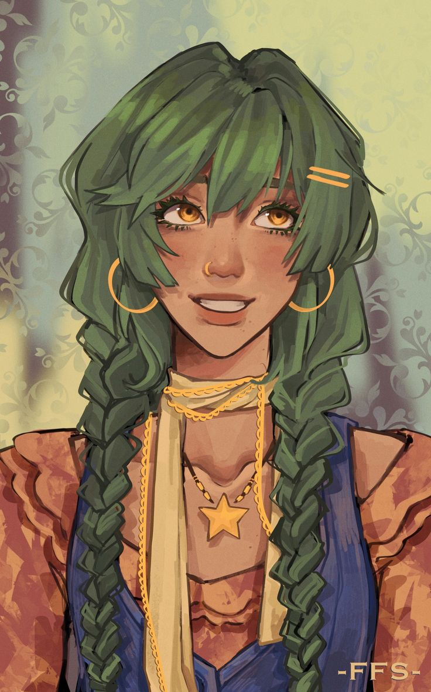
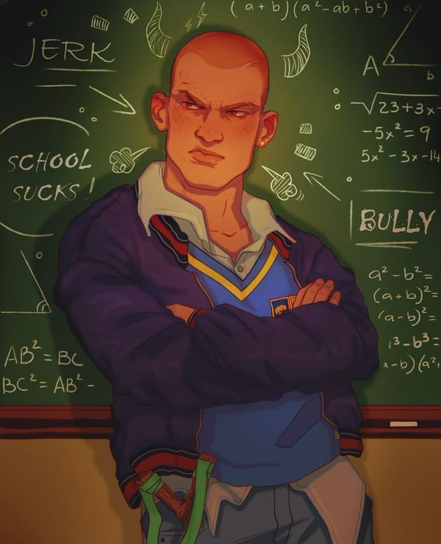
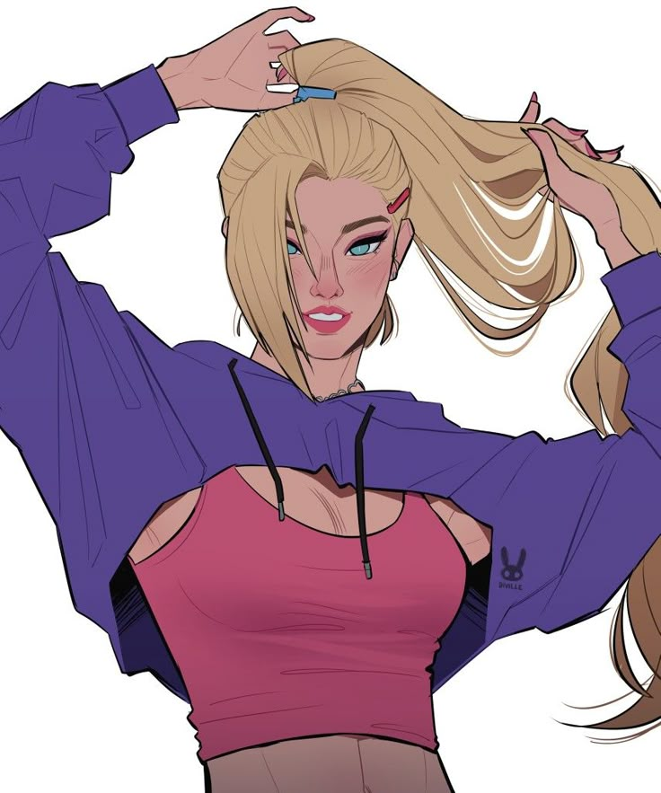

Antônia Benevenut · Beatriz
- Idade
- 18 anos
- Profissão
- Estudante da Escola Municipal de Sorocaba
- Presença
- A Excursão
Arquivo selado
Criação de personagens e fichas.



A Terra Invertida ·
Feito por Lune, @luunesz